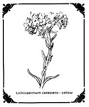

The Shoshone of Nevada are said to be sophisticated in herbal medicines, collecting their own plants in nearby mountains. It was among these people in the 1930's that the use of Lithospermum rudeale as a contraceptive was discovered.
The first reports indicated that a cold water infusion from the roots taken daily as a drink for a period of six months would ensure sterility thereafter.
Under U.S. Department of Agriculture auspices, pharmacological research was carried out on this plant, and in 1945 a laboratory study was published confirming the effectiveness of this plant as a contraceptive.
Since 1945 a dozen or more serious laboratory studies on animals have been made, all confirming the contraceptive properties of the plant. The active principle, called Lithospermic Acid (LA), in low concentration acts specifically on the pituitary gland, suppressing the production of gonadotropins (hormones which stimulate the sex glands) and certain pituitary hormones.
This type of "antihormonal" action is said to be pharmacologically unique and the effects of the drug do not seem to be duplicated by other known compounds. LA is highly soluble and may be extracted by cold water. The resulting solutions are usually yellow or brown in color.
The use of Lithospermum extract produces suspension of the estrus cycle, (the entire sequence of changes in the female reproductive organism and a dimunution or inhibition of the secretion of estrogens and androgens (sex hormones).
In one laboratory test the suspension of the estrus cycle was maintained for eight months. Removal of the animals from the Lithospermum diet produced an immediate return to relatively normal capacity. The immediate return to normal estrus cycle indicates the Lithospermum produces no permanent or irreversible changes within the body, and examination showed no damage to the pituitary gland. Normal animals previously on a regular diet in turn, responded within ninety-six hours to Lithospermum extract. Depending upon the type of test animals and the concentration of Lithospermum administered with the food succeeded 51% to total effectiveness.
The relative abundance of Lithospermic Acid in the various parts of the plant is as follows: The flowers and seeds contain the maximum concentration; the roots are second and the leaves third; the stems contain very little. The plant tops maintain a more or less constant amount of activity over the growing season; in the roots, the concentration is at its lowest in June and at its highest in September (apparently when the active principle leaves the root the plant begins to grow).
There are six species of Lithospermum and all showed marked antigonadotropic activity. Extracts of Lithospermum latifolium, L. croceum and L. ruderale are active at less than 1 mg. dose levels. A test of the root L. ruderale after three years storage showed that the active principle was still highly effective. There is no appreciable difference in activity between fresh and dried root extracts. The activity of the root extract, however, rapidly deteriorates.
For those interested in finding this plant, it grows on the high, dry slopes and plains from Placer to Modoc counties in California.
In testing other plants during the early laboratory examination of Lithospermum it was found that two others had a comparable amount of activity: the common Borage (Borago officinalis) which belongs to the same family as Lithospermum, and the leaves of a common Raspberry (Rubus idaeus), the dried plant being better than the fresh. The Raspberry proved inactive, however, which is too bad, as you could then enjoy the fruit and gain its side benefits at the same time.
|
 |
|
|